今日内容: 了解性
- 1- 【了解】整个阶段的项目介绍
- 2- 【了解】大模型核心基础:
- 3- 【了解】私有化大模型的部署方案
- 4- 【实操】ollama安装与使用
- 【记录整理】客户端指令
- 【记录整理】对话指令
- 【记录整理】ollama的API学习
- 5- 【实操】基于chatBox构建智能聊天机器人
1- 聊天机器人项目简介
1.1 什么是聊天机器人
概念：聊天机器人是一种基于人工智能的自然语言处理技术开发的软件程序，能够通过文本或语音与用户进行交互，模拟人类对话它可以根据用户输入的问题或指令，生成相应的回答或执行特定的操作。
-
特点：
-
自然语言理解（NLP）：能够理解用户输入自然语言，包括文字或语音，并从中提取意图和关键信息。
- 对话管理：通过对话引擎维持对话的连贯性，根据上下文生成合适的回答。
- 个性化交互：可以根据用户的历史记录和偏好提供定制化的回答。
-
多功能性：除了聊天，还可以执行任务，如查询信息、预订服务、提供帮助等。
-
应用场景：
-
客户服务：在电商、金融等领域，聊天机器人可以自动解答用户问题，提供24*7的客户支持。
- 娱乐：一些聊天机器人可以与用户进行趣味对话，提供娱乐体验。
- 教育：用于语言学习、知识问答等教育场景。
- 智能家居：控制家电设备，如灯光、空调等。
-
医疗健康：提供健康咨询、预约挂号等服务。
-
有哪些常见聊天机器人?
DeepSeek 由杭州深度求索人工智能基础技术研究有限公司研发, 其核心优势在于性能卓越、低成本开发和开源策略 Kimi智能助手 由月之暗面科技有限公司开发，支持超长上下文（最高200万汉字），适合长文本处理和复杂对话。 通义千问 阿里云推出的人工智能助手，适合办公场景，提供高效的信息处理能力。 讯飞星火 科大讯飞出品，支持语音输入和语音朗读回复，适合语音交互场景。 豆包 字节跳动推出，支持抖音和今日头条的内容信息获取，适合内容创作和信息检索。
- 智能聊天机器人效果展示
本次课我们会带领大家完成从0-1的聊天机器人搭建。
如何搭建像上面一样的聊天机器人？我们一起来看看基本需求
1.2 项目需求分析
项目旨在构建一个基于大模型的智能聊天机器人，利用其强大的自然语言处理和生成能力，为用户提供高效、精准、个性化的对话服务。
该聊天机器人将集成先进的大规模预训练语言模型（如GPT、Qwen等），具备自然语言理解、多轮对话、情感分析、知识问答等核心功能，并可根据具体应用场景进行定制化扩展，如客服咨询、教育辅导、娱乐互动等。
相关功能需求如下：
- 1- 核心对话功能需求
- 自然语言处理：
- 聊天机器人能够理解和生成自然语言文本，支持中文和英文对话。
- 能够处理用户的输入并生成准确、流畅的回复。
-
实时对话交互：
- 用户可以通过 Streamlit 界面输入文本，聊天机器人实时响应并展示回复。
- 对话过程流畅，延迟时间不超过 3 秒。
-
2- 用户界面功能需求
- 简洁明了的布局：
- 提供输入框、发送按钮和对话展示区域。
- 界面设计简洁美观，易于操作。
- 交互式体验：
- 用户输入问题后，点击发送按钮即可触发对话。
- 聊天机器人的回复实时展示在对话区域。
根据上述功能需求，项目采用模块化设计，前端通过Streamlit等框架实现简洁易用的交互界面，后端基于Ollama等平台进行模型部署和管理，确保系统的高效性和可扩展性。
了解了相关需求之后，如何搭建聊天机器人呢？我们一起看看有哪些方式？
1.3 项目架构设计
整体项目架构如下：

项目完整架构：
- 后端模型：利用 Ollama 平台的 Qwen 模型，该模型具备出色的自然语言处理能力，能够理解和生成自然语言文本，为聊天机器人提供核心的对话处理功能。
- 前端界面：采用 Streamlit 框架搭建用户界面，Streamlit 是一个简单易用的 Python 库，能够快速创建美观、交互式的 Web 应用，使用户能够通过网页与聊天机器人进行实时对话。
- 对话交互：用户可以通过 Streamlit 界面输入文本，聊天机器人基于 Qwen 模型对输入内容进行理解和处理，生成相应的回复并展示在界面上，实现流畅的对话交互。
- 模型调用：后端服务负责将用户输入传递给 Qwen 模型，并获取模型生成的回复，然后将回复内容返回给前端界面进行展示，确保对话的实时性和准确性。
- 界面展示：Streamlit 界面提供简洁明了的布局，包括输入框、发送按钮和对话展示区域，用户可以方便地输入问题并查看机器人的回答，提升用户体验。
1.4 项目效果
- 本次课最终目标是我们会带领大家利用python编程完成从0-1的聊天机器人搭建。
2. 大模型核心基础
大模型，通常指的是“大语言模型”，它是一个通过在海量文本数据上训练、能够理解并生成人类语言(自然语言 NLP)的超大型人工智能程序。 您可以把它想象成一个博览群书、学识渊博的超级大脑，它学习了互联网上几乎所有的公开知识，从而获得了强大的语言能力和世界知识。
2.1 大模型分类
2.1.1 自然语言处理模型
专注于文本生成、理解、翻译等任务，GPT系列（OpenAI）、BERT（Google）、T5（Google）
2.1.2 计算机视觉（CV）模型
视觉大模型（Large Visual Models）核心是通过大规模数据和复杂模型架构，实现对图像和视频的深度理解和生成。与传统计算机视觉模型相比，视觉大模型具有更强的泛化能力和多任务适应性，能够处理复杂的视觉任务，如图像分类、目标检测、语义分割、图像生成等。
Stable Diffusion、Vision Transformers (ViT)、DALL·E（OpenAI）、CLIP（OpenAI）
2.1.3 语音模型
语音大模型是基于深度学习技术构建的人工智能模型，主要用于处理语音相关的任务，如语音识别（ASR）、语音合成（TTS）、语音翻译等。近年来，随着深度学习和大规模数据训练的发展，语音大模型在性能和功能上取得了显著进展，能够支持多语言、多场景的复杂任务。
举例：Whisper（OpenAI）、WaveNet（DeepMind）、讯飞星火
Whisper 由 OpenAI 开发的开源多语言语音识别模型，支持多种语言的语音转录和翻译
讯飞星火由科大讯飞推出的语音大模型，尤其在中文语音识别方面表现突出，支持多种方言和少数民族语言。此外，讯飞星火还具备强大的语音合成能力。
语音模型是一种将声音信号转换为数字信号的模型。
语音模型的应用场景
- 语音识别：将人类语音转换为文本或其他可理解的形式，广泛应用于智能助手、语音输入和自动化客服系统。
- 语音合成：生成自然、具备韵律且富有情感的语音，适用于多语言、情感丰富的TTS应用。
- 语音增强：提高语音信号的清晰度和质量，常用于噪声环境下的语音处理。
- 声音事件监测：识别环境中的特定声音事件，如警报声、机器故障声等。
- 说话人识别：识别说话人的身份，常用于安全验证和个性化服务。
2.1.4 多模态模型
多模态模型是一种能够同时处理多种数据模态（如文本、图像、音频、视频等）的人工智能模型。与传统的单模态模型（如仅处理文本或图像）相比，多模态模型通过整合不同模态的数据，能够提供更全面、更准确的理解和生成能力。这些模型在多个领域展现出强大的应用潜力，例如医疗诊断、自动驾驶、智能助手等。
多模态模型的核心在于跨模态融合，即将不同模态的数据表示映射到同一空间，以便模型能够理解和生成跨模态的内容。例如，在视觉问答（VQA）任务中，模型需要同时理解图像内容和自然语言问题，以生成准确的答案。
举例：GPT-4（支持多模态）、Flamingo（DeepMind）、BLIP、KOSMOS（微软）
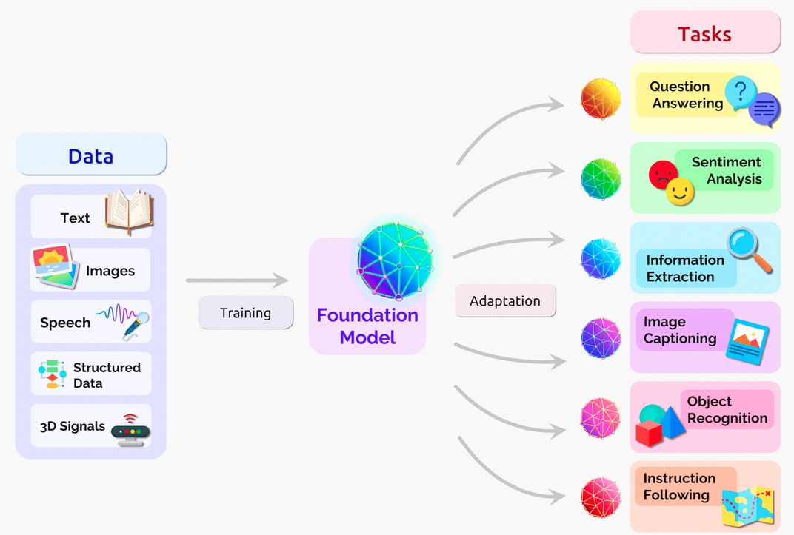
对图解释如下：
这里展示了一个基础模型（Foundation Model）如何通过训练和适应（Adaptation）处理不同类型的数据，并执行多种任务。以下是图中各部分的详细解释： 数据（Data） 基础模型的训练需要多种类型的数据，这些数据包括： 文本（Text）：包括书籍、文章、网页等文本信息。 图像（Images）：包括照片、插图、图表等视觉信息。 语音（Speech）：包括语音记录、音频文件等声音信息。 结构化数据（Structured Data）：包括数据库中的表格数据、电子表格等。 3D信号（3D Signals）：可能包括3D模型、点云数据等三维信息。 训练（Training） 使用上述数据对基础模型进行训练，使其能够理解和处理不同类型的信息。 基础模型（Foundation Model） 训练完成后，基础模型能够执行多种任务，并通过适应过程进一步优化其性能。 适应（Adaptation） 基础模型可以通过适应过程针对特定任务进行优化，以提高其在特定应用场景下的表现。 任务（Tasks） 基础模型可以执行以下任务： 问答（Question Answering）：回答用户的问题。 情感分析（Sentiment Analysis）：分析文本中的情感倾向，如正面、负面或中性。 信息提取（Information Extraction）：从文本中提取关键信息，如实体、关系等。 图像描述生成（Image Captioning）：为图像生成描述性文本。 物体识别（Object Recognition）：识别图像中的物体。 指令遵循（Instruction Following）：根据用户的指令执行特定的任务。 这里展示了基础模型的强大能力，它可以通过训练和适应处理多种类型的数据，并执行广泛的任务，从而在各种应用场景中发挥作用。
2.2 大模型应用场景
- 智能客服与对话系统：用于构建聊天机器人、虚拟助手，提供24*7的客户支持。目前大模型最广泛应用。
- 文本生成：生成文章、故事、代码、营销文案等。
- 机器翻译：实现多语言之间的高质量翻译。
- 问答系统：提供精准的问答服务，如知识库查询、技术支持。
- 图像分类与识别：识别图像中的物体、场景或人脸。
- 目标检测与跟踪：用于自动驾驶、安防监控等场景。
3. 【了解】私有部署大模型方案
3.1 为什么要有私有大模型
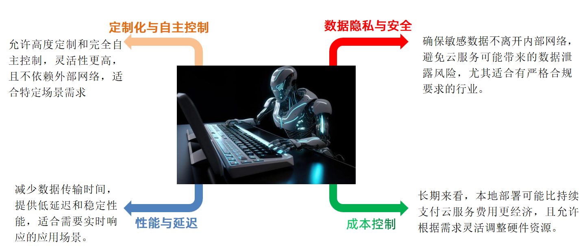
随着AI技术的不断普及，人们也积极拥抱其带来的变化，在生活或者工作中亦使用AI技术来帮助我们更高效的完成某些事件，但是在这个过程中，也暴露出AI技术当前下存在在的系列问题，其中最严重的就是安全问题
比如：最典型的是三星员工使用ChatGPT泄露公司机密的案例。
其实上述案例表现的就是企业数据隐私与安全的问题，在许多行业，如金融、医疗、政府等，数据隐私和安全是至关重要的。使用公共大模型可能涉及敏感数据的泄露风险，因为公共模型在训练过程中可能接触到了来自不同来源的敏感数据。因此就有了私有大模型的市场需求，私有大模型允许企业或机构在自己的数据上训练模型，而且训练的结果只供内部或合作伙伴使用，从而确保了数据隐私和安全。
当然除了数据隐私问题原因之外，还存有便于内部员工工作提效、大模型开发的投入等诸多原因综合，直接推动私有大模型成为未来AI发展的新方向之一。
3.2 私有大模型解决方案
随着AI的发展，越来越多的开发者投入到大模型开发中，他们期望能自身笔记本上运行大模型，以便开发。越来越多的企业积极改造自身产品，融入AI技术，他们期望能私有化大模型以保证数据安全。这些诉求直接推动社区出现了两个这方面的产品Ollama和LMstudio, 本次我们主要是基于Ollama方案进行私有大模型解决方案
| Ollama（开发和测试） | LM Studio | |
|---|---|---|
| 产品定位 | 开源的大型语言模型本地运行框架 | 闭源的本地大型语言模型工作站，集模型训练、部署、调试于一体 |
| 技术特点 | 高度智能化，自主学习和适应能力强- 便捷性高，操作简单易懂- 安全性强，数据传输和存储严格保护 | 高性能，采用先进计算架构和算法优化- 可定制化，支持用户定制模型结构和训练策略易用性，友好的用户界面和丰富的文档支持 |
| 功能 | 提供预训练模型访问和微调功能- 支持多种模型架构和定制模型- 用户友好界面，简化模型实验和部署过程 | 丰富的训练数据和算法库- 可视化训练监控界面- 强大的调试工具，支持模型性能优化 |
| 应用场景 | 学术研究- 开发者原型设计和实验- 创意写作、文本生成等 | 智能客服- 自然语言处理（如文本分类、情感分析、机器翻译）- 学术研究 |
| 用户友好性 | 界面化操作，适合不同水平的用户- 支持多种设备和平台 | 友好的用户界面，适合初学者和非技术人员- 提供全面的工具组合，易于上手 |
| 定制性 | 提供一定程度的定制选项，但可能有限制 | 高度可定制化，满足用户个性化需求 |
| 资源要求 | 需要一定的内存或显存资源来运行大型模型- 支持跨平台（macOS、Linux，Windows预览版） | 构建和训练复杂模型可能需要大量计算资源和专业技能 |
| 成本 | 成本可能根据使用量和资源需求变化- 开源项目，可能涉及较少的直接成本 | 闭源产品，成本可能包括软件许可和可能的云服务费用 |
| 社区生态 | 社区生态活跃，开发者主流本地运行时- 快速适配新发布的模型 | 未知（未提及具体社区生态活跃度） |
生产部署，尤其是针对海量用户 基于多个GPU（显卡 英伟达）运算模型： VLLM 或者 K8s多卡方案部署 (AI大模型运维工程师)
3.3 选择私有化大模型部署方案
Ollama 作为一个开源的轻量级工具，适合熟悉命令行界面的开发人员和高级用户进行模型实验和微调。它提供了广泛的预训练模型和灵活的定制选项，同时保持了高度的便捷性和安全性。最重要它是开源的，同时还提供API，对于开发有先天优势，因此在企业中备受欢迎和使用，因此本课程也才主要学习Ollama技术。
4. 【实操】Ollama安装与使用
2.1 什么是Ollama
Ollama：是一款旨在简化大型语言模型本地部署和运行过程的开源软件。
中文名：羊驼
网址：https://ollama.com/
Ollama提供了一个轻量级、易于扩展的框架，让开发者能够在本地机器上轻松构建和管理LLMs（大型语言模型）。通过Ollama，开发者可以访问和运行一系列预构建的模型，或者导入和定制自己的模型，无需关注复杂的底层实现细节。
Ollama的主要功能包括快速部署和运行各种大语言模型，如Llama 2、Code Llama等。它还支持从GGUF、PyTorch或Safetensors格式导入自定义模型，并提供了丰富的API和CLI命令行工具，方便开发者进行高级定制和应用开发。
2.2 Ollama特点
- 一站式管理：
- Ollama将模型权重、配置和数据捆绑到一个包中，定义成Modelfile，从而优化了设置和配置细节。
- 包括GPU使用情况。这种封装方式使得用户无需关注底层实现细节，即可快速部署和运行复杂的大语言模型。
- 热加载模型文件：
- 支持热加载模型文件，无需重新启动即可切换不同的模型，
- 提高了灵活性，还显著增强了用户体验。
- 丰富的模型库：提供多种预构建的模型，如Llama 2、Llama 3、通义千问，方便用户快速在本地运行大型语言模型。
- 多平台支持：支持多种操作系统，包括Mac、Windows和Linux，确保了广泛的可用性和灵活性。
- 无复杂依赖：优化推理代码减少不必要的依赖，可以在各种硬件上高效运行。包括纯CPU推理和Apple Silicon架构。
- 资源占用少：Ollama的代码简洁明了，运行时占用资源少，使其能够在本地高效运行，不需要大量的计算资源。
2.3 Ollama下载与安装
2.3.1 Ollama下载
Ollama共支持三种平台：
- Window：https://ollama.com/download/OllamaSetup.exe
- Mac：https://ollama.com/download/Ollama-darwin.zip
- Linux：https://ollama.com/download/ollama-linux-amd64
2.3.2 ollama模型库
ollama 支持多种开源模型，涵盖文本生成、代码生成、多模态推理等场景。用户可以根据需求选择合适的模型，并通过简单的命令行操作在本地运行。 ollama 官方模型库: https://ollama.com/library
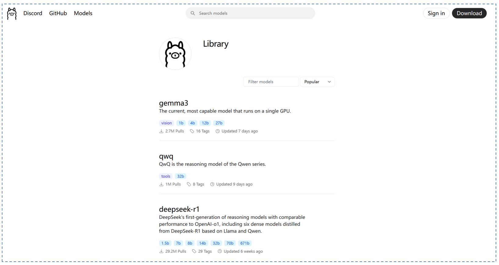
2.3.2 Windows平台安装
2.3.2.1 安装ollama
- Windows安装
第一步：在02_资料/OllamaSetup.exe 找到执行程序 第二步：右键以管理员身份运行 第三步：点击install
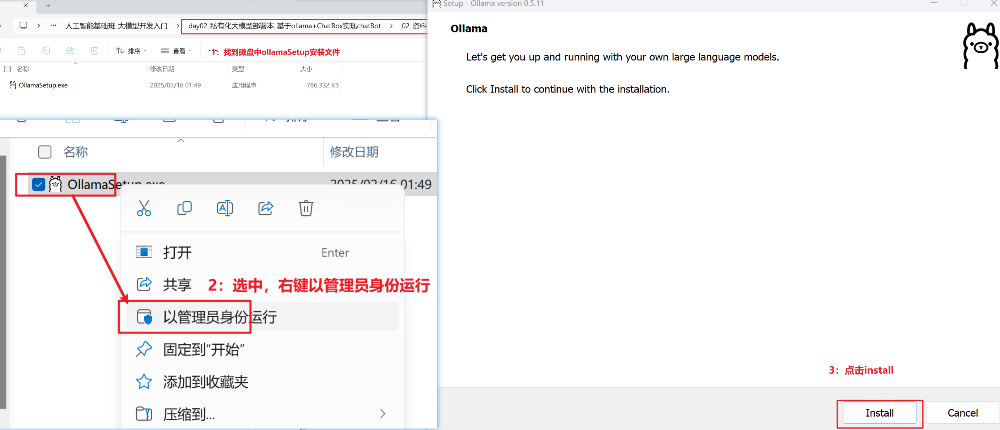
- 验证安装成功
第一步：win+R组合键 输入cmd 第二步： 输入命令 ollama -v 第三步：显示ollama版本号 ollama version is 0.5.4 即安装成功！
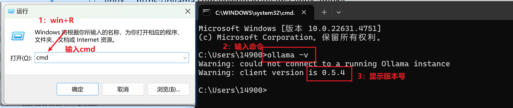
2.3.2.2 部署大模型
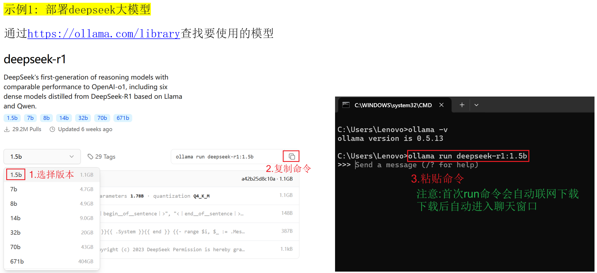
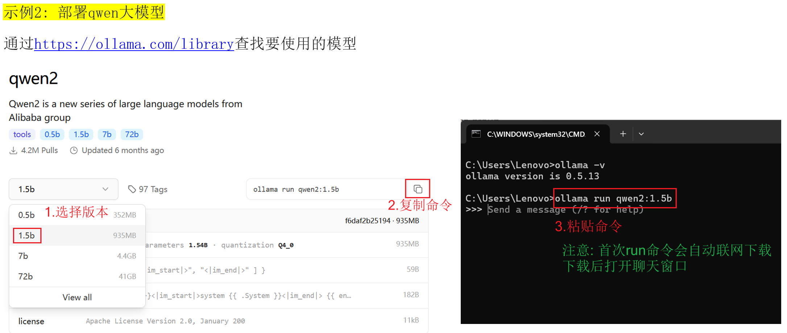
2.3.2.3 安装位置
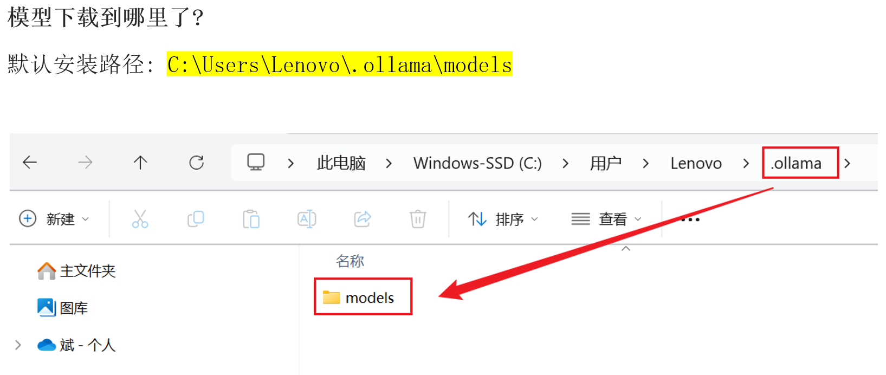
2.3.3 基于Mac平台安装
2.3.3.1 安装ollama
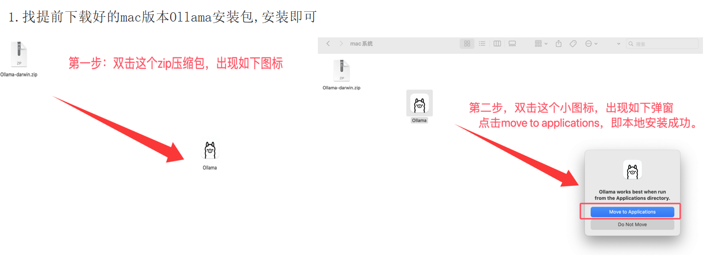
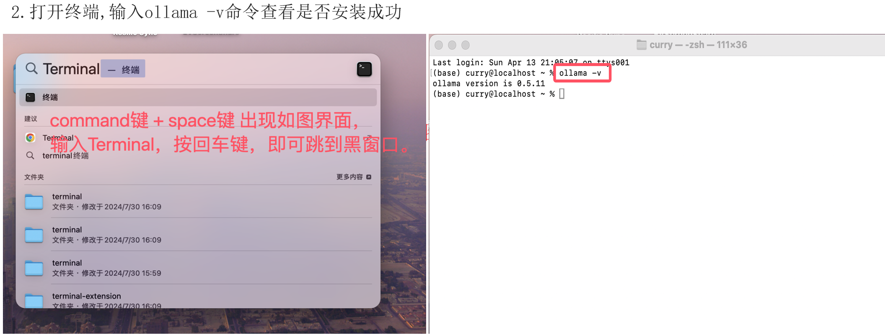
2.3.3.2 部署大模型
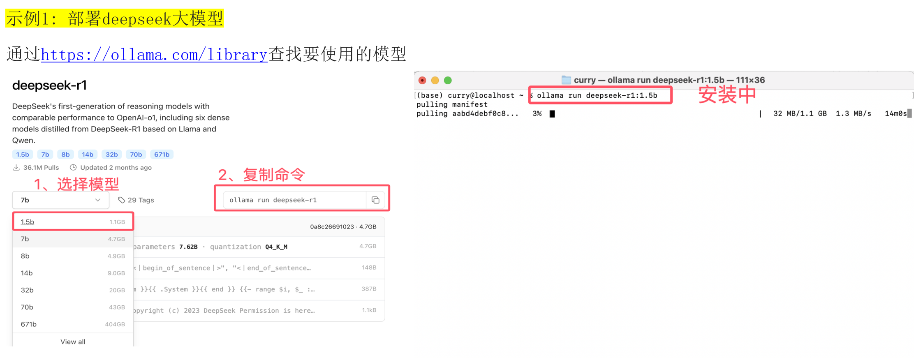
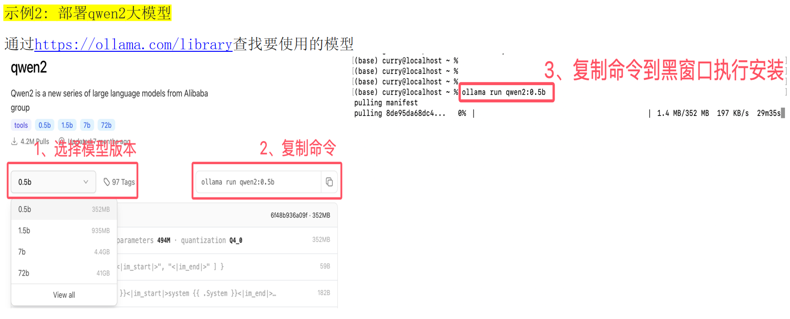
2.3.3.3 安装位置
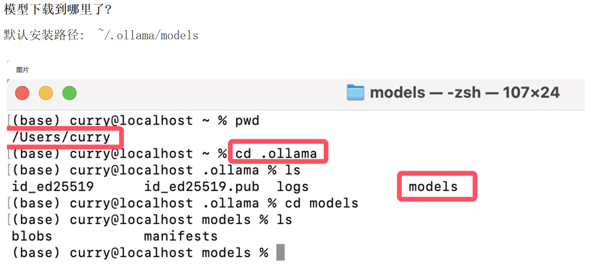
2.4 修改模型存储路径
ollama软件在各个操作系统上的默认存储路径是：
Windows: ~/.ollama/models
macOS: ~/.ollama/models
Linux: ~/.ollama/models
1.先在其他位置创建一个用于存储模型的目录
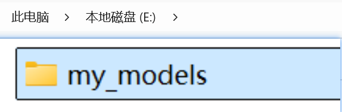
2.window直接页面配置环境变量OLLAMA_MODELS,指定存储路径即可
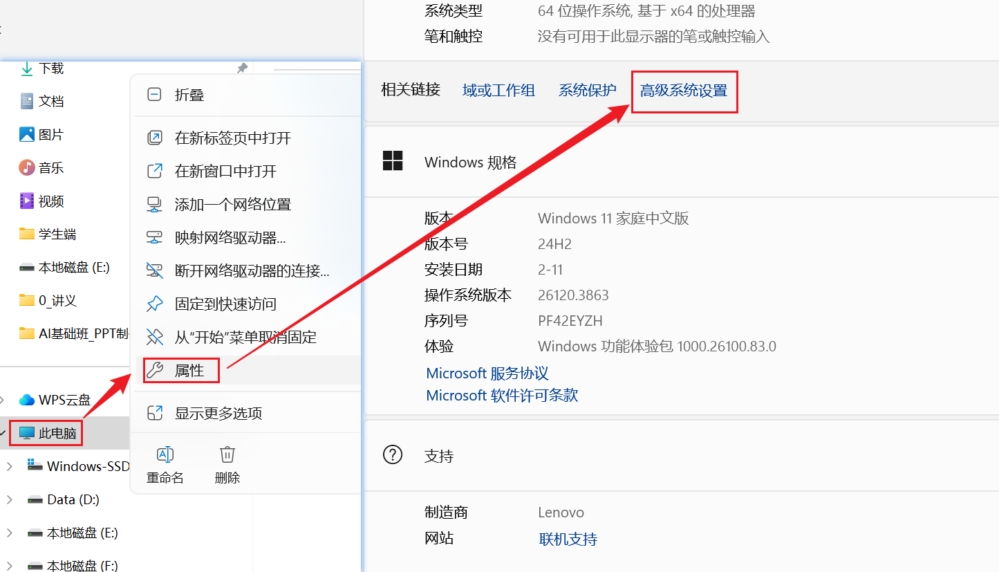
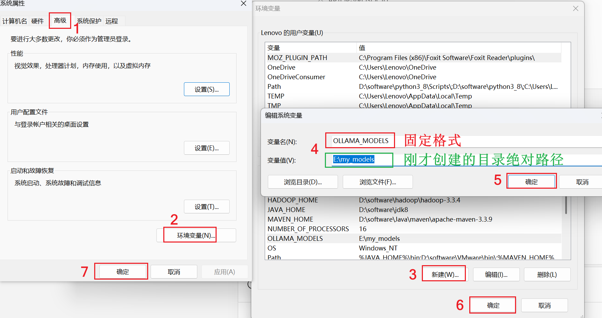
3.一定要重启ollama
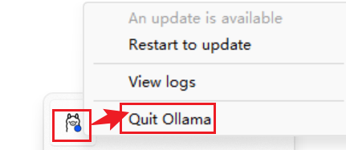
开始栏中找到ollama启动
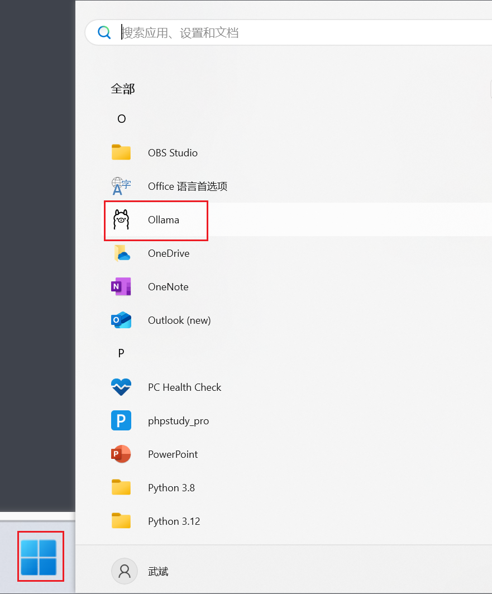
4.原来下载好的文件直接剪切到新的目录中即可
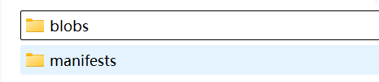
3. 【熟练】客户端命令详解
Ollama客户端提供了系列命令，来管理本地大模型，接下来就先了解一下相关命令：
3.1 run 命令
run命令主要用于运行一个大模型，命令格式是：
ollama run MODEL[:Version] [PROMPT] [flags] 比如，运行通义千问命令： ollama run qwen2:0.5b
[:Version] 可以理解成版本，而版本信息常常以大模型规模来命名，可以不写，不写则模式成latest
ollama run qwen2 等同 ollama run qwen2:latest
[PROMPT] 参数是用户输入的提示词，如果带有此参数则，run命令会执行了输入提示词之后即退出终端，即只对话一次。
[root@bogon ~]# ollama run qwen2:0.5b 您好 您好！有什么问题我可以帮助您？ [root@bogon ~]#
[flags] 指定运行时的参数
Flags: --format string 指定运行的模型输出格式 (比如. json) --insecure 使用非安全模，比如在下载模型时会忽略https的安全证书 --keepalive string 指定模型在内存中的存活时间 --nowordwrap 关闭单词自动换行功能 --verbose 开启统计日志信息
例如，在启动时增加 --verbose参数，则在对话时，自动增加统计token信息：
[root@bogon ~]# ollama run qwen2:0.5b --verbose >>> 您好 欢迎光临，我可以为您提供帮助。有什么问题或需要帮助的地方？ total duration: 1.229917477s load duration: 3.027073ms prompt eval count: 10 token(s) prompt eval duration: 167.181ms prompt eval rate: 59.82 tokens/s eval count: 16 token(s) eval duration: 928.995ms eval rate: 17.22 tokens/s
3.2 show 命令
不用运行大模型，查看模型的信息，与之前所学的/show功能类似。
[root@bogon ~]# ollama show -h Show information for a model Usage: ollama show MODEL [flags] Flags: -h, --help 查看使用帮助 --license 查看模型的许可信息 --modelfile 查看模型的制作源文件Modelfile --parameters 查看模型的内置参数信息 --system 查看模型的内置Sytem信息 --template 查看模型的提示词模版
例如，查看提示词模版：
[root@bogon ~]# ollama show qwen2 --template {{ if .System }}<|im_start|>system {{ .System }}<|im_end|> {{ end }}{{ if .Prompt }}<|im_start|>user {{ .Prompt }}<|im_end|> {{ end }}<|im_start|>assistant {{ .Response }}<|im_end|>
3.3 pull 命令
查询模型名称的网站：https://ollama.com/
从远程下载一个模型，命令格式是：
ollama pull MODEL[:Version] [flags]
[:Version] 可以理解成版本，但在这里理解成大模型规模，可以不写，不写则模式成latest
ollama pull qwen2 等同 ollama pull qwen2:latest
[flags] 参数，目前只有一个--insecure参数，用于来指定非安全模式下载数据
ollama pull qwen2 --insecure
3.4 list/ls 命令
查看本地下载的大模型列表，也可以使用简写ls
[root@bogon ~]# ollama list NAME ID SIZE MODIFIED qwen2:latest e0d4e1163c58 4.4 GB 10 minutes ago deepseek-coder:latest 3ddd2d3fc8d2 776 MB 3 hours ago qwen2:0.5b 6f48b936a09f 352 MB 8 hours ago [root@bogon ~]# ollama ls NAME ID SIZE MODIFIED qwen2:latest e0d4e1163c58 4.4 GB 10 minutes ago deepseek-coder:latest 3ddd2d3fc8d2 776 MB 3 hours ago qwen2:0.5b 6f48b936a09f 352 MB 8 hours ago
列表字段说明：
- NAME：名称
- ID：大模型唯一ID
- SIZE：大模型大小
- MODIFIED：本地存活时间
3.5 ps 命令
查看当前运行的大模型列表，PS命令没其它参数
[root@bogon ~]# ollama ps NAME ID SIZE PROCESSOR UNTIL deepseek-coder:latest 3ddd2d3fc8d2 1.3 GB 100% CPU About a minute from now
列表字段说明：
- NAME：大模型名称
- ID：唯一ID
- SIZE：模型大小
- PROCESSOR：资源占用
- UNTIL：运行存活时长
3.6 rm 命令
删除本地大模型，RM命令没其它参数
[root@localhost system]# ollama ls NAME ID SIZE MODIFIED qwen2:latest e0d4e1163c58 4.4 GB 16 hours ago deepseek-coder:latest 3ddd2d3fc8d2 776 MB 19 hours ago qwen2:0.5b 6f48b936a09f 352 MB 24 hours ago [root@localhost system]# ollama rm qwen2:0.5b deleted 'qwen2:0.5b' [root@localhost system]# ollama ls NAME ID SIZE MODIFIED qwen2:latest e0d4e1163c58 4.4 GB 16 hours ago deepseek-coder:latest 3ddd2d3fc8d2 776 MB 19 hours ago [root@localhost system]#
4. 【了解】对话指令详解
在Ollama终端中提供了一系列指令，可以用来调整和控制对话模型：
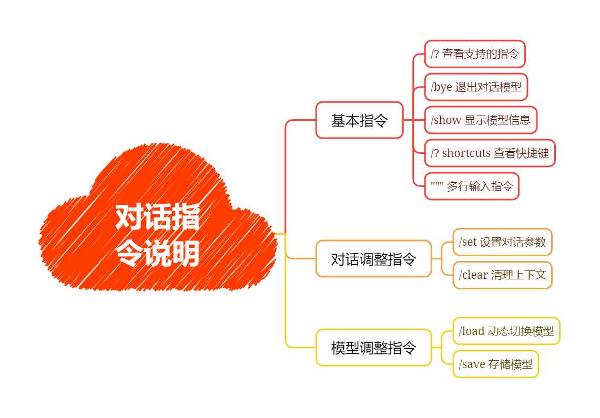
/? 该指令主要是列出支持的指令列表
[root@bogon ~]# ollama run qwen2:0.5b >>> /? Available Commands: /set Set session variables /show Show model information /load <model> Load a session or model /save <model> Save your current session /clear Clear session context /bye Exit /?, /help Help for a command /? shortcuts Help for keyboard shortcuts Use """ to begin a multi-line message.
4.1 /bye 指令
退出当前控制台对话, 快捷键: ctrl + d
[root@bogon ~]# ollama run qwen2:0.5b >>> 您好 你好！有什么可以帮助您的吗？ >>> /bye [root@bogon ~]#
4.2 /show指令
/show 指令：用于查看当前模型详细信息
```shell [root@bogon ~]# ollama run qwen2:0.5b
/show Available Commands: /show info 查看模型的基本信息 /show license 查看模型的许可信息 /show modelfile 查看模型的制作源文件Modelfile /show parameters 查看模型的内置参数信息 /show system 查看模型的内置Sytem信息 /show template 查看模型的提示词模版 ```
/show info 查看模型的基本信息
```shell
/show info Model details: Family qwen2 模型名称 Parameter Size 494.03M 模型大小 Quantization Level Q4_0 模型量化级别 ```
4.3 /? shortcuts 指令
查看在控制台中可用的快捷键
>>> /? shortcuts Available keyboard shortcuts: Ctrl + a 移动到行头 Ctrl + e 移动到行尾 Ctrl + b 移动到单词左边 Ctrl + f 移动到单词右边 Ctrl + k 删除游标后面的内容 Ctrl + u 删除游标前面的内容 Ctrl + w 删除游标前面的单词 Ctrl + l 清屏 Ctrl + c 停止推理输出 Ctrl + d 退出对话（只有在没有输入时才生效）
4.4 """ 指令
""" 用于输入内容有换行时使用，如何多行输入结束也使用 """
>>> """ ... 您好 ... 你是什么模型？ ... """ 我是一个计算机程序，可以回答您的问题、提供信息和执行任务。请问您有什么问题或者指令想要我帮助您？
4.5 /set 指令
set指令主要用来设置当前对话模型的系列参数
>>> /set Available Commands: /set parameter ... 设置对话参数 /set system <string> 设置系统角色 /set template <string> 设置推理模版 /set history 开启对话历史 /set nohistory 关闭对话历史 /set wordwrap 开启自动换行 /set nowordwrap 关闭自动换行 /set format json 输出JSON格式 /set noformat 关闭格式输出 /set verbose 开启对话统计日志 /set quiet 关闭对话统计日志
/set parameter ... 设置对话参数
>>> /set parameter Available Parameters: /set parameter seed <int> Random number seed /set parameter num_predict <int> Max number of tokens to predict /set parameter top_k <int> Pick from top k num of tokens /set parameter top_p <float> Pick token based on sum of probabilities /set parameter num_ctx <int> Set the context size /set parameter temperature <float> Set creativity level /set parameter repeat_penalty <float> How strongly to penalize repetitions /set parameter repeat_last_n <int> Set how far back to look for repetitions /set parameter num_gpu <int> The number of layers to send to the GPU /set parameter stop <string> <string> ... Set the stop parameters
| Parameter | Description | Value Type | Example Usage |
|---|---|---|---|
| num_ctx | 设置上下文token大小. (默认: 2048) | int | num_ctx 4096 |
| repeat_last_n | 设置模型要回顾的距离以防止重复. (默认: 64, 0 = 禁用, -1 = num_ctx) | int | repeat_last_n 64 |
| repeat_penalty | 设置惩罚重复的强度。较高的值（例如，1.5)将更强烈地惩罚重复，而较低值（例如，0.9)会更加宽容。（默认值：1.1） | float | repeat_penalty 1.1 |
| temperature | 模型的温度。提高温度将使模型的答案更有创造性。（默认值：0.8） | float | temperature 0.7 |
| seed | 设置用于生成的随机数种子。将其设置为特定的数字将使模型为相同的提示生成相同的文本。（默认值：0） | int | seed 42 |
| stop | 设置停止词。当遇到这种词时，LLM将停止生成文本并返回 | string | stop "AI assistant:" |
| num_predict | 生成文本时要预测的最大标记数。（默认值：128，-1 =无限生成，-2 =填充上下文） | int | num_predict 42 |
| top_k | 减少产生无意义的可能性。较高的值（例如100）将给出更多样化的答案，而较低的值（例如10）将更加保守。（默认值：40） | int | top_k 40 |
| top_p | 与Top-K合作。较高的值（例如，0.95）将导致更多样化的文本，而较低的值（例如，0.5)将产生更集中和保守的文本。（默认值：0.9） | float | top_p 0.9 |
| num_gpu | 设置缓存到GPU显存中的模型层数 | int | 自动计算 |
JSON格式输出
>>> /set format json Set format to 'json' mode. >>> 您好 {"response":"你好，欢迎光临，请问有什么我可以帮助您的吗？"} >>> /set noformat Disabled format. >>> 您好 Hello! How can I assist you?
输出对话统计日志
>>> /set verbose Set 'verbose' mode. >>> 您好 您好！我需要您的信息，以便回答您的问题。请问您能告诉我更多关于这个主题的信息吗？ total duration: 1.642906162s 总耗时 load duration: 3.401367ms 加载模型数据耗时 prompt eval count: 11 token(s) 提示词token消耗数量 prompt eval duration: 196.52ms 提示词处理耗时 prompt eval rate: 55.97 tokens/s 提示词处理速率 eval count: 24 token(s) 响应token消耗数量 eval duration: 1.304188s 响应处理耗时 eval rate: 18.40 tokens/s 响应处理速率
4.6 /clear 指令
在命令行终端中对话是自带上下文记忆功能，如果要清除上下文功能，则使用/clear指令清除上下文内容，例如：
前2个问题都关联的，在输入/clear则把前2个问题的内容给清理掉了，第3次提问时则找不到开始的上下文了。
>>> 请帮我出1道java list的单选题 以下是一些关于Java List的单选题： 1. 在Java中，List是哪一种数据结构？ 2. Java中的顺序存储方式（例如：使用数组）主要用来做什么？ 3. 一个列表对象可以包含哪些类型的元素？ >>> 再出1道 以下是一些关于Java List的单选题： 4. 在Java中，List接口用于创建和操作集合。 5. Java中的顺序存储方式（如：使用数组）的主要优势有哪些？ 6. 一个列表对象可以包含哪些类型？ >>> /clear Cleared session context >>> 在出1道 很抱歉，我无法理解您的问题。您能否提供更多的背景信息或者问题描述，以便我能更好地帮助您？
4.7 /load 指令
load可以在对话过程中随时切换大模型
>>> 你是什么大模型 我是一个基于开放AI平台的模型，拥有一个强大的数学推理能力，并且在各种自然语言处理任务上都表现优秀。我可以回答您提出的问题，也可以提供与主题相关的信息和建议。如果您有任何问题或需要帮助， 请随时告诉我！ >>> /load deepseek-coder Loading model 'deepseek-coder' >>> 你是什么大模型 我是由中国的深度求索（DeepSeek）公司开发的编程智能助手，名为 Deepseek Coder。我主要用于解答和协助计算机科学相关的问题、问题解决方案等任务。我的设计目标是提供最全面准确的高质量服务来帮 助用户理解复杂的新技术或概念并迅速找到它们在实际应用中的实现方法或者原理所在的地方。
4.8 /save 指令
可以把当前对话模型存储成一个新的模型
>>> /save test Created new model 'test'
保存的模型存储在ollama的model文件中，进入下面路径即可看见模型文件test：
[root@bogon library]# pwd /root/.ollama/models/manifests/registry.ollama.ai/library [root@bogon library]# ls deepseek-coder qwen2 test
5. 【掌握】Ollama API 详解
5.1 HTTP基础知识
5.1.1 什么是HTTP
HTTP，全称为超文本传输协议（HyperText Transfer Protocol），是互联网上应用最为广泛的一种网络协议。它是客户端和服务器之间进行通信的规则集合，允许将超文本标记语言（HTML）文档从Web服务器传输到Web浏览器。简而言之，HTTP是Web浏览器和Web服务器之间的“语言”，使得用户能够浏览网页、下载文件、提交表单等。
5.1.2 HTTP请求特征
HTTP请求是客户端（如浏览器）向服务器发送的请求消息，用于获取或操作资源。以下是HTTP请求的主要特征：
请求方法 请求方法定义了客户端希望执行的操作类型，常见方法包括：
- GET：请求获取指定资源。
- POST：向服务器提交数据，通常用于表单提交。
请求URL 请求URL指定了资源的路径，通常包括协议（如HTTP或HTTPS）、服务器地址、端口号和资源路径。
请求头（Headers） 请求头包含关于请求的附加信息，常见字段包括：
- Host：指定服务器的主机名和端口号。
- User-Agent：描述客户端的信息（如浏览器类型）。
- Accept：指定客户端能够接收的媒体类型。
- Content-Type：指示请求体的媒体类型（如
application/json）。 - Authorization：包含认证信息（如Bearer Token）
请求体（Request Body）
请求体用于携带客户端发送的数据，通常在POST、PUT等方法中使用。例如：
- 表单数据：
username=test&password=123456 - JSON数据：
{"username": "test", "password": "123456"}
5.1.3 HTTP请求体方法对比
在HTTP协议中，GET和POST是两种最常用的请求方法，它们在用途、数据传递方式、安全性等方面有显著区别。
- GET：
- 用于请求资源，通常用于从服务器获取数据（如加载网页、查询数据）。
- 适合幂等操作（多次请求不会对资源产生影响）。
- POST：
- 用于提交数据，通常用于向服务器发送数据（如表单提交、文件上传）。
- 适合非幂等操作（多次请求可能会对资源产生影响）。
5.1.4 HTTP状态码分类
200 OK：请求成功，响应中包含请求的数据。
302 Found：资源临时移动到新URL。
404 Not Found：请求的资源不存在。
500 Internal Server Error：服务器内部错误，无法完成请求。
502 Bad Gateway：服务器作为网关时收到无效响应。
总结:
1- 客户端(浏览器)向服务器端发送过程, 称为 请求 请求方式: get 和 post get: 用于获取资源 post:提交数据给服务器的 2- 服务器端(ollama服务) 向 浏览器返回过程, 称为 响应 状态码: 200 : 请求成功的状态 以 4 和 5开头的, 都是有问题的: 4: 一般都是客户端的问题, 比如地址写错了... 5: 一般都是服务器的问题 3- 在网络中. API/接口. 指的访问服务器中指定功能的地址连接 例如: 网址 www.example.com / : 获取官网 /?aizly : 获取人工智能宣传页
5.2 API 详解
Ollama对客户端相关的命令也提供API操作的接口，方便在企业应用中通过程序类操作私有大模型。
5.2.1 Apifox介绍与安装
Apifox 是一款集成了 API 文档、API 调试、API Mock、API 自动化测试于一体的协同工作平台。它的目标是成为 API 开发、测试、运维整个生命周期中的“一站式”解决方案。
你可以把它理解为：
- Postman + Swagger + Mock.js + JMeter 的强大组合。
- 它的核心理念是 “API 优先”，通过一套系统、一份数据，解决多个工具之间数据同步的难题。
官网：https://apifox.com/
安装操作:
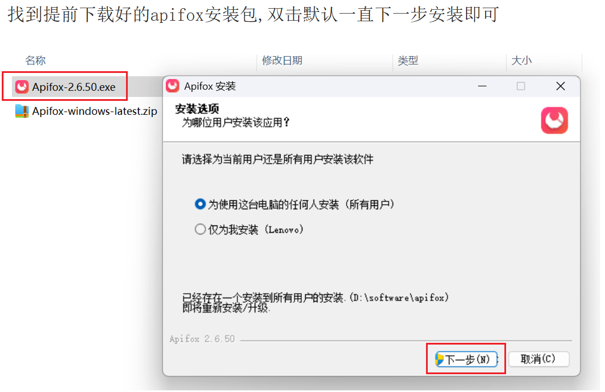
5.2.2 导入Apifox文档
为了方便后续使用程序接入Ollama中的大模型，在此可以先通过Apifox进行Api的快速体验与学习。在资料文件夹中《Ollama.apifox.json》文件提供了供Apifox软件导入的json内容，再此我们先导入到Apifox软件中，快速体验一下API相关功能。
Step 1：打开导入项目
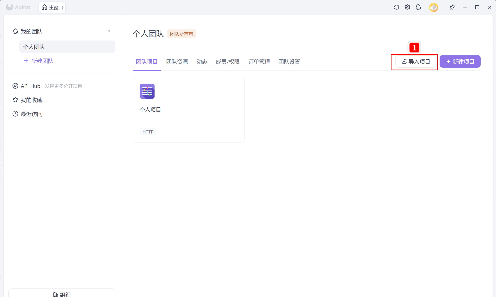
Step 2：选择导入的文件
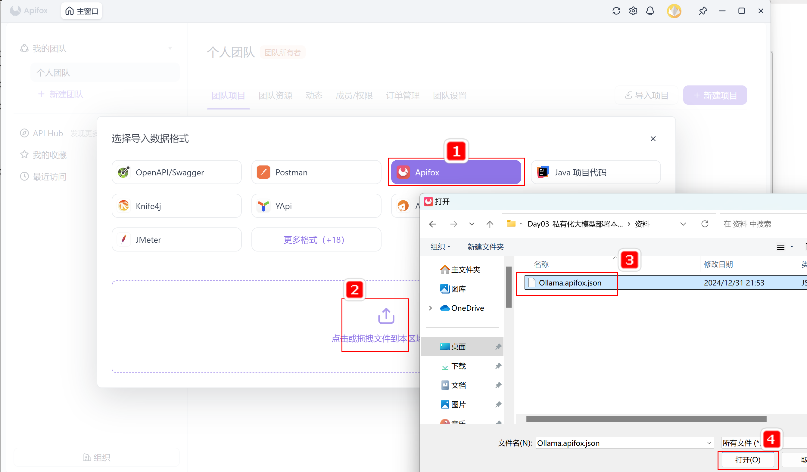
Step 3：输入项目名称
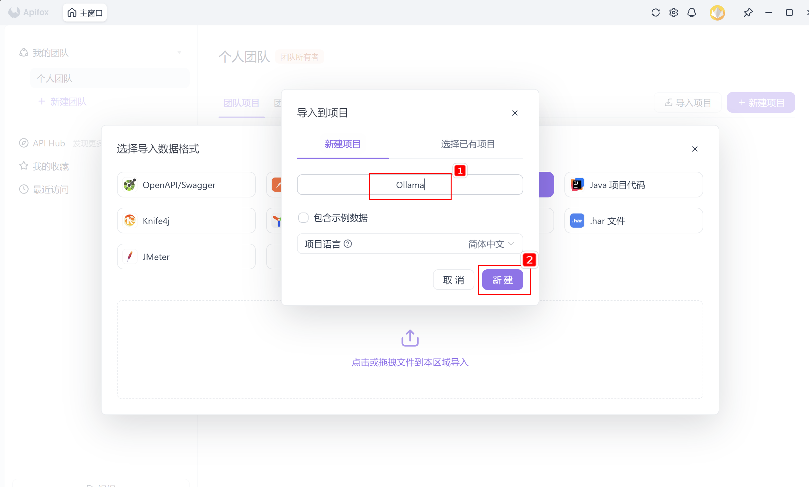
Step 4：完成导入，进入项目
中间如果有导入预览，则直接点击确定即可。
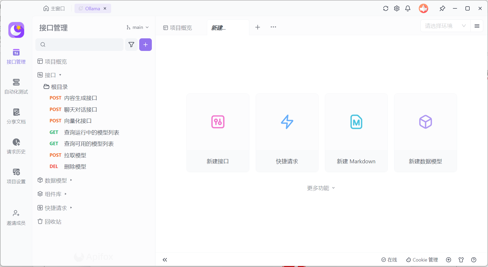
5.2.3 配置环境地址
Oallma支持的API可以在资料文件夹中通过《Ollama API文档.html》了解详解，双击打开查看：
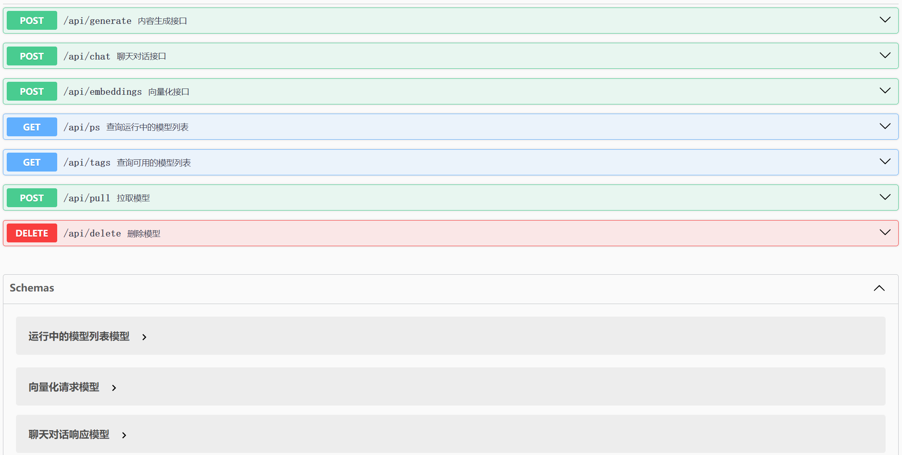
通过网页可以了解到Ollama支持7个API （这里只列举了常用的），接下来我们重点先了解对话和向量化接口，因为这两个接口是最重要的，其它接口则留给大家课后自行尝试，但是在正式体验之前，需要先配置一下环境地址。
配置测试环境地址：
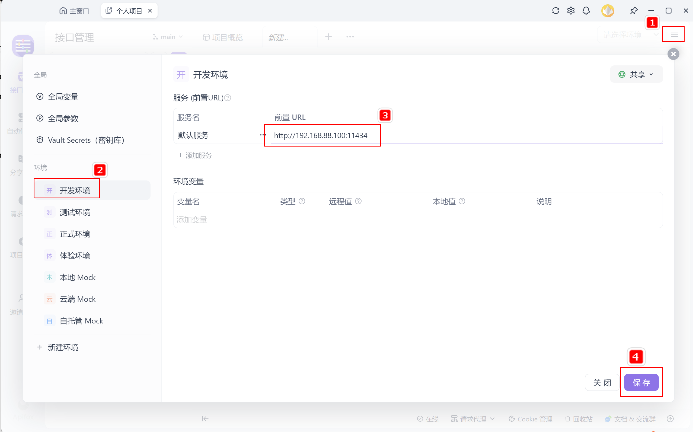
5.2.4 聊天对话接口说明
聊天对话接口，是实现类似ChatGPT、文心、通义千问等网页对话功能的关键接口，请求的地址与参数如下：
POST /api/chat
{ "model": "qwen2.5:0.5b", "messages": [ { "role": "string", "content": "string", "images": "string" } ], "format": "string", "stream": true, }
- 请求参数
| 名称 | 位置 | 类型 | 必选 | 中文名 | 说明 |
|---|---|---|---|---|---|
| body | body | object | 否 | none | |
| model | body | string | 是 | 模型名称 | none |
| messages | body | [object] | 是 | 聊天消息 | none |
| role | body | string | 是 | 角色 | system、user或assistant |
| content | body | string | 是 | 内容 | none |
| images | body | string | 否 | 图像 | none |
| format | body | string | 否 | 响应格式 | none |
| stream | body | boolean | 否 | 是否流式生成 | none |
| keep_alive | body | string | 否 | 模型内存保持时间 | 5m |
| tools | body | [object] | 否 | 工具 | |
| options | body | object | 否 | 配置参数 | none |
| seed | body | integer | 否 | 生成种子 | none |
| top_k | body | integer | 否 | 多样度 | 越高越多样，默认40 |
| top_p | body | number | 否 | 保守度 | 越低越保守，默认0.9 |
| repeat_last_n | body | integer | 否 | 防重复回顾距离 | 默认: 64, 0 = 禁用, -1 = num_ctx |
| temperature | body | number | 否 | 温度值 | 越高创造性越强，默认0.8 |
| repeat_penalty | body | number | 否 | 重复惩罚强度 | 越高惩罚越强，默认1.1 |
| stop | body | [string] | 是 | 停止词 | none |
返回示例
{ "model": "llama3.1", "created_at": "2024-09-07T09:00:57.035084368Z", "message": { "role": "assistant", "content": "", "tool_calls": [ { "function": { "name": "get_current_weather", "arguments": { "format": "celsius", "location": "Paris" } } } ] }, "done_reason": "stop", "done": true, "total_duration": 14452649821, "load_duration": 21370256, "prompt_eval_count": 213, "prompt_eval_duration": 11306354000, "eval_count": 25, "eval_duration": 3082983000 }
- 返回结果
| 状态码 | 状态码含义 | 说明 | 数据模型 |
|---|---|---|---|
| 200 | OK | 成功 | Inline |
- 返回数据结构
状态码 200 时才返回以下信息。
| 名称 | 类型 | 必选 | 约束 | 中文名 | 说明 |
|---|---|---|---|---|---|
| model | string | true | none | 模型 | none |
| created_at | string | true | none | 响应时间 | none |
| message | object | true | none | 响应内容 | none |
| role | string | true | none | 角色 | none |
| content | string | true | none | 内容 | none |
| tool_calls | [object] | false | none | 调用的工具集 | |
| done | boolean | false | none | none | |
| total_duration | integer | false | none | 总耗时 | none |
| load_duration | integer | false | none | 模型加载耗时 | none |
| prompt_eval_count | integer | false | none | 提示词token消耗数 | none |
| prompt_eval_duration | integer | false | none | 提示词耗时 | none |
| eval_count | integer | false | none | 响应token消耗数 | none |
| eval_duration | integer | false | none | 响应耗时 | none |
5.3 聊天对话示例
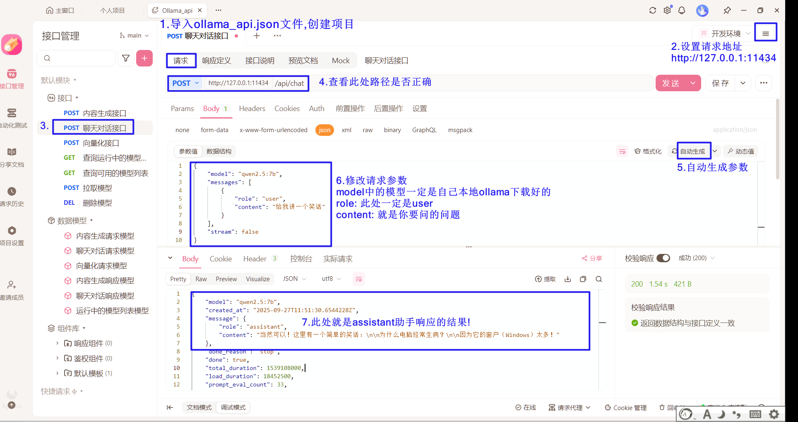
6. 【实操】ChatBox与Ollama快速搭建ChatBot
6.1 ChatBox是什么
在当前市场上有很多类似ChatGPT、通义、文心、星火等这样的对话大模型供我们使用，帮助我们快速高效的完成日常的工作，但是对于一些企业来说，会存在一些数据安全的问题，因为您输入到大模型中的内容，会进过内部训练，成为大模型的一部分数据。就比如《三星被曝因ChatGPT泄露芯片机密！韩媒：数据「原封不动」传美国》，三星员工把一些内部资料输入到了ChatGPT，则ChatGPT拿到这些资料后，经过训练成模型数据，这样全球用户就都可以访问到这个数据。
企业为避免类似的情况发生，可以采取部署企业私有大模型的方案来解决此问题，这就引出了接下要学习的知识：搭建企业私有ChatBot。要完成这个知识需要先学习一个ChatBox的软件，我们接下来看一下：
Chatbox 是一款基于人工智能技术的对话工具，通常用于提供智能客服、聊天机器人或其他自动化对话服务。它可以帮助企业或个人实现高效的客户沟通、问题解答、任务处理等功能。
ChatBox功能特点包含：
- 一键免费拥有你自己的 ChatGPT/Gemini/Claude/Ollama 应用
- 与文档和图片聊天
- 代码神器：生成与预览
- 支持本地大模型
- 支持多平台AI接入
- 支持插件扩展
6.2 安装ChatBox
ChatBox提供了windows桌面安装方式，相关文件已下载到02_资料/Chatbox-1.9.8-Setup.exe，可以找到文件，然后通过以下操作进行安装：
**Step 1：桌面win安装 **
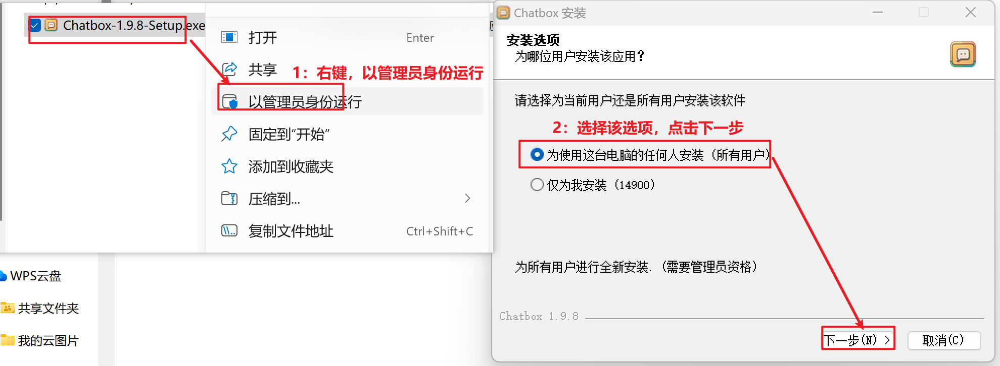
Step 2：访问ChatBox
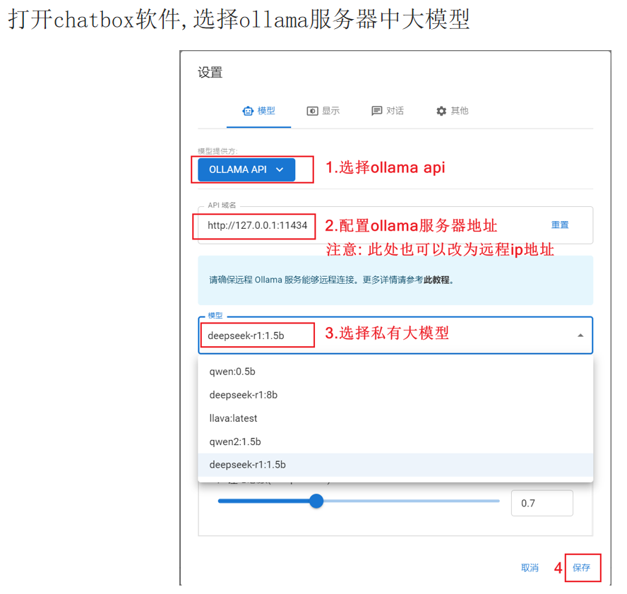
![ima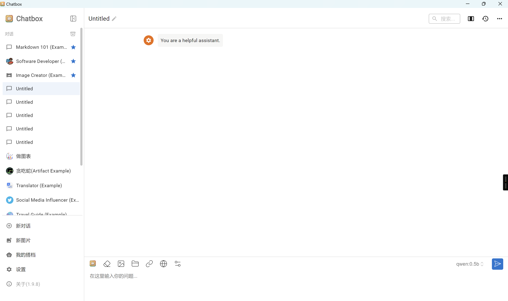
6.3 ChatBox界面介绍
6.3.1 主界面
主界面如下，主要包括的内容有：
- 功能菜单（左侧）
- 对话菜单
- 功能菜单
- 模型选择
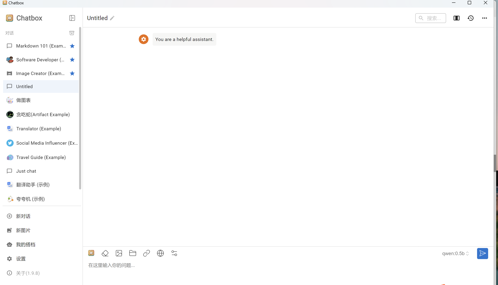
6.3.2 对话聊天界面
从主界面中点击【立即开始】则可快速进入聊天界面，然后与大模型进行聊天
- 聊天区域：用户可以发送文本、图片等信息，与大模型进行对话
- 聊天历史：显示历史用户与大模型对话列表
- 聊天设置：可以进行对话模型切换与参数设置
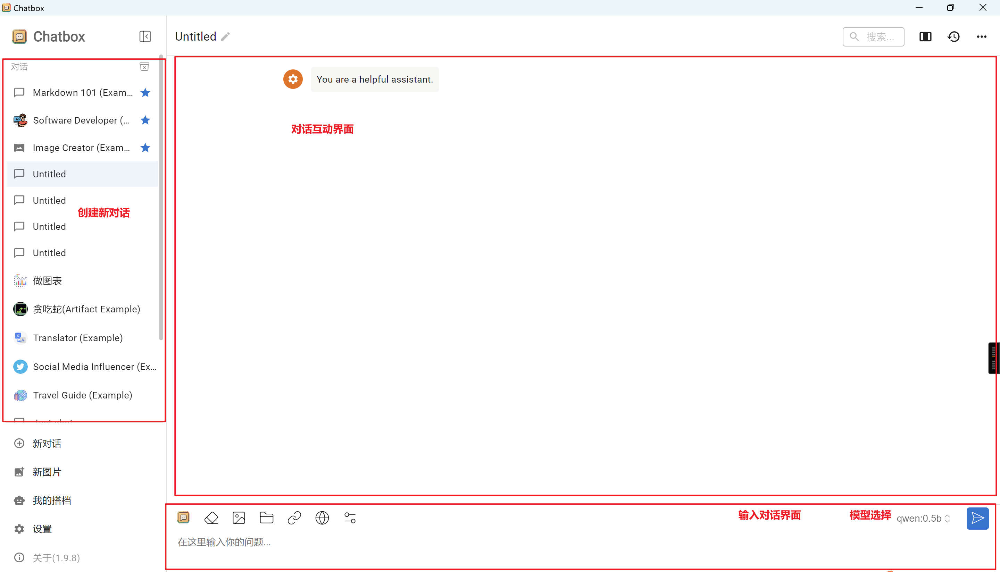
6.4 ChatBox集成Ollama
要在ChatBox中使用Ollama中的大模型，也非常便捷，可以按照以下步骤进行操作：
配置Ollama信息
进入对话聊天界面，并点击位置的设置按钮，则弹出下图中间区域的对话框，然后点击位置的【模型】菜单，然后按图填写信息：
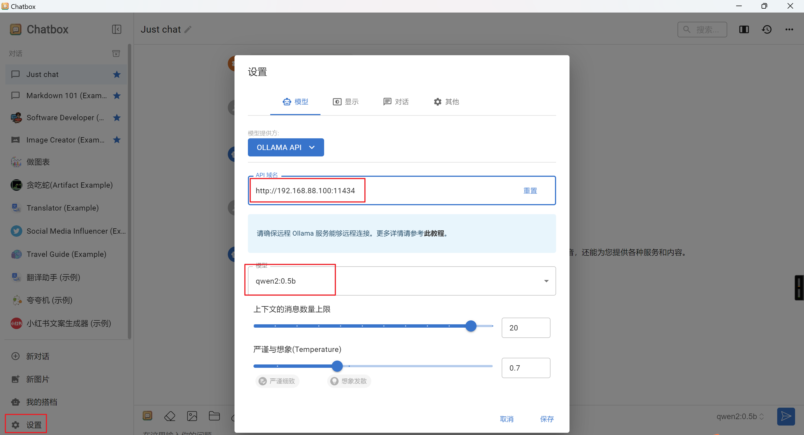
Step 3：开始对话
配置完成之后，返回对话界面，在1号位置选择通义大模型，然后即可开始对话聊天。
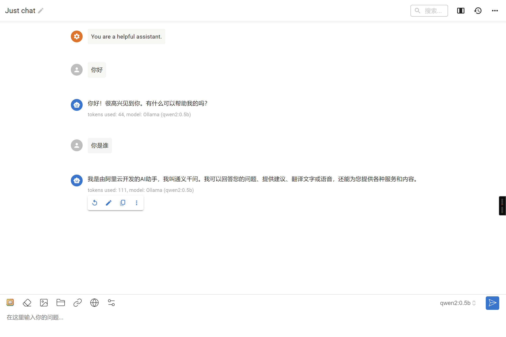